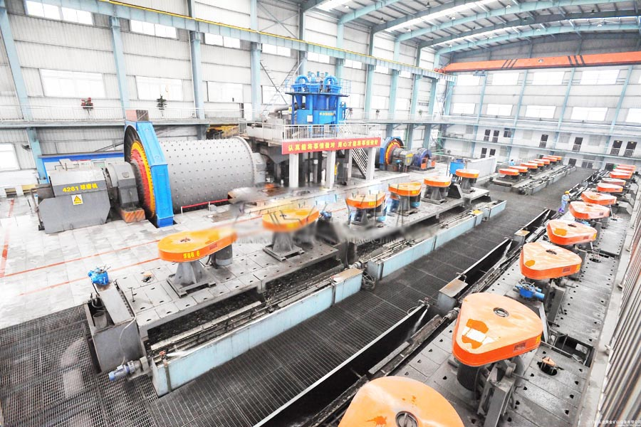

- Home >
- benefication plant >
- Stone Quarrying Process Line

Construction waste crushing production line

Mobile construction waste crushing station for urban construction waste crushing.
Stone Quarrying Process Line
Stone Quarrying Process Line introduced
XJM, XJX series flotation machine is a mechanical stirring self-priming flotation machine is mainly used for sorting 0.5mm below the slime; also the separation of iron ore, phosphorus, hydrochloric acid, lead and zinc ore effective equipment. Yaw by double oblique After stirring impeller, a three-dimensional circulation pulp, pulp Hill from the center of the draft tube feeding, aerosol dosing methods, and the negative pressure generated by the rotation of the impeller, self-priming agents into a mist of gas and bubbles contact with the coal particles with automatic level adjustment means for automatic control system to control the concentration, dry coal, the dose and level.
Stone Quarrying Process Line technical parameters
| Model | XJM-S | XJM-S | XJM-S | XJM-S | XJX-T 8A | XJX-T8 | ||
| Capacity | 0.6-1.0 | 0.6-1.0 | 0.6-1.0 | 0.6-1.0 | 0.7-1.2 | 0.8-1.2 | ||
| Single volume | 4 | 8 | 12 | 16 | 8.2 | 8.5 | ||
| Motor stirring mechanism | Model | Y 180L -6 | Y 200L -6 | Y 2200M -6 | Y 250M -6 | Y 225M -6V6 | Y 225M -6V6 | Y280S-8V1 |
| Power kw | 15 | 22 | 30 | 37 | 30 | 30 | 37 | |
| Rotating speed | 970 | 970 | 980 | 980 | 970 | 970 | 970 | |
| Scraper reducer | Model | XWD1.5-4 | XWD1.5-4 | XWD1.5-4 | XWD2.2-5 | JXJ311-43 | XWD2. 2-5-1 /43 | JXJ311-43 |
| Power kw | 1.5 | 1.5 | 1.5 | 2.2 | 1.94 | 2.2 | 1.94 | |
| Rotating speed | 25 | 25 | 25 | 25 | 33.3 | 33.3 | 33.3 | |
| Dimensions |
Long mm |
3 Groove | 6785 | 8200 | 9494.5 | 10970.5 | 12169 | 14744/15560 |
| 4 Groove | 8690 | 10555 | 122545 | 14175.5 | ||||
| 5 Groove | 10595 | 12910 | 15014.5 | 17380.5 | ||||
| 6 Groove | 12500 | 15265 | 17774.5 | / | ||||
| width mm | 2150 | 2750 | 3120 | 3450 | 3500 | 3500 | 3840 | |
| height mm | 2758 | 2958 | 3458.5 | 3433 | 2950 | 2844 | 3500 | |
|
weight kg |
3 Groove | 9684 | 15100 | 22863 | 27344 | 25.03 | 24.57/25.96 | 37.5/39 |
| 4 Groove | 12274 | 19758 | 28334 | 33966 | ||||
| 5 Groove | 14854 | 24415 | 33805 | 40564 | ||||
| 6 Groove | 17446 | 29072 | 39867 | / | ||||

XJM flotation machine features
1. This series flotation machine with mechanical stirring, innovative and unique way feeding pulp, pulp flows reasonable state, large capacity;
2. Inflatable high efficiency, wide tuning range, flotation speed. The boot state, are free to adjust the feed rate.
3. The stirring mechanism for the steady flow impeller and a radial plate with a curved blade, can make coal slurry circulation and inflated moderately;
4. For coal, particle size, concentration of different parameters to optimize the design of fluid dynamics, high density and coarse, fine-grained coal also get a good separation efficiency.
5. Compact structure, light weight, reliable operation. Flotation speed, high selectivity of fine grade, good coarse flotation.
6. low power consumption and drug consumption, installed capacity and actual consumption of power is less than the same type of flotation machine with the specifications.
7. reasonable structure parameters, small footprint, taking into account the compatibility with older devices.
8. The operation of high reliability, easy operation and maintenance, slurry level single point of control, can automatically adjust, can also be manually.
9. impeller and stator wear-resistant material, the service life of 3 to 5 years.
Leave Me A Message, Now
If you have any questions regarding equipment prices, production line configuration or other problems, you can send a message to us, we will contact you soon.